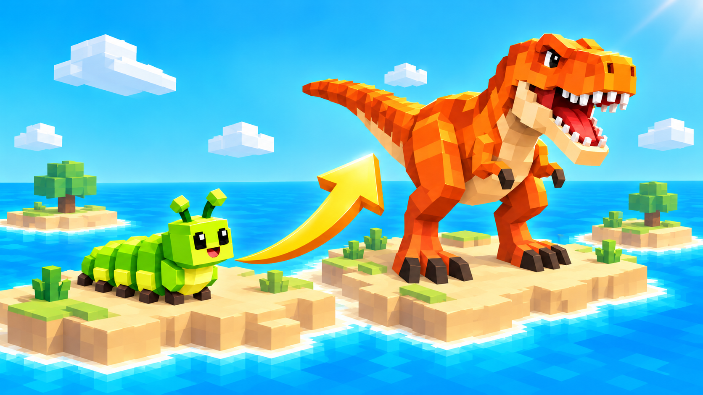
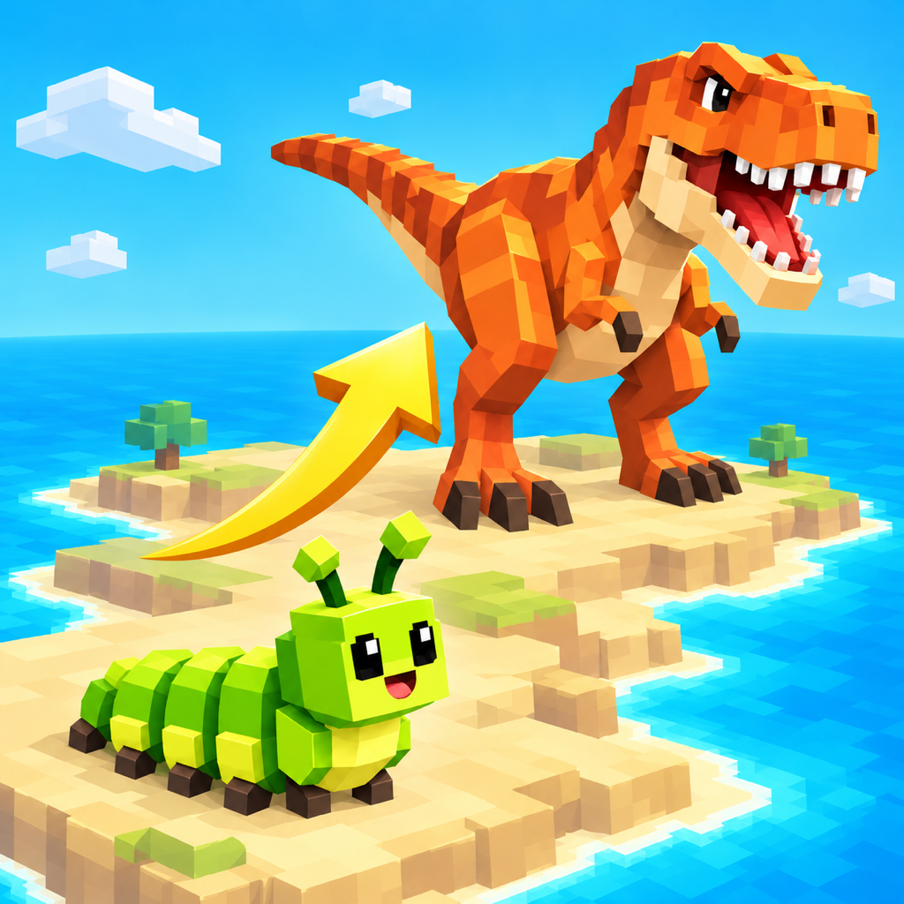

50 animal forms
Start small and progress toward a T-Rex through food and combat.


进化小岛 · Single-player adventure
From a tiny caterpillar to a T-Rex. Find food, survive encounters and grow through 50 animal forms on an island of your own.
从毛毛虫到霸王龙。寻找食物、战斗成长，在属于自己的小岛上经历50种动物形态。
Start small and progress toward a T-Rex through food and combat.
Explore grassland, woodland, swamp, canyon and volcano areas, with a day-night cycle and regional music.
Claim nests, recover health and replenish companions. Use the minimap to plan your route.
Enter a map seed or return to journeys saved on your device. Play with touch movement, camera, attack and jump controls.
Free for iPhone and iPad. Versions with rewarded ads offer optional double attack, double experience and protection from experience loss after death. Playing and normal respawn remain available without watching ads.
Five daylight views from the running game. Select an image to view it at full size.
从一只小小的毛毛虫开始，在进化小岛上探索、觅食与成长，逐步进化为霸王龙。
探索草地、树林、沼泽、峡谷和火山五种区域，体验50种不同动物形态。通过战斗与收集食物提升等级，寻找并占领巢穴，恢复生命、补充跟班。
使用触摸控制移动、调整视角、攻击与跳跃。在小地图上查看巢穴，规划自己的探索路线。
输入地图种子开始新旅程，或继续保存在设备上的历史旅程。不同的种子带来不同的小岛，昼夜变化与区域音乐陪伴你的探索。
这是一款单机成长探索游戏。
從一隻小小的毛毛蟲開始，探索、覓食與成長，逐步進化為霸王龍。
探索草地、樹林、沼澤、峽谷和火山五種區域，體驗50種動物形態。透過戰鬥與收集食物提升等級，尋找並佔領巢穴，恢復生命、補充跟班。
觸控移動、調整視角、攻擊與跳躍。使用小地圖規劃路線，輸入地圖種子開始新旅程，或繼續裝置上儲存的歷史旅程。晝夜變化與區域音樂陪伴你的探索。
這是一款單機成長探索遊戲。
Start as a tiny caterpillar. Explore, find food and grow through 50 animal forms on your way to becoming a T-Rex.
Discover grasslands, forests, swamps, canyons and volcanoes. Gain levels through combat and food, claim nests to recover health and replenish your companions.
Use touch controls to move, look around, attack and jump. Plan your route with the minimap. Enter a map seed for a new journey or continue a journey saved on your device. Day and night changes and regional music accompany your exploration.
A single-player game of growth and exploration.
小さな毛虫からスタート。探索や食事、戦いを通して成長し、50種類の動物の姿へ進化しながらティラノサウルスを目指しましょう。
草原、森、沼地、峡谷、火山を探索。巣を占領して体力を回復し、仲間を補充できます。
タッチ操作で移動、視点変更、攻撃、ジャンプ。ミニマップで進路を考え、マップシードを入力して新しい旅を始めたり、端末に保存した旅を再開したりできます。昼夜の変化とエリアごとの音楽も楽しめます。
ひとりで遊ぶ成長と探索のゲームです。
작은 애벌레로 시작하세요. 탐험과 먹이 수집, 전투를 통해 성장하고 50가지 동물 형태를 거쳐 티라노사우루스를 목표로 나아가세요.
초원, 숲, 늪, 협곡, 화산을 탐험하세요. 둥지를 차지해 체력을 회복하고 동료를 보충할 수 있습니다.
터치로 이동, 시점 조절, 공격, 점프를 즐기세요. 미니맵으로 경로를 살펴보고 지도 시드를 입력해 새 여정을 시작하거나 기기에 저장된 여정을 이어가세요. 낮과 밤의 변화와 지역별 음악이 탐험을 함께합니다.
혼자 즐기는 성장과 탐험 게임입니다.
Empieza como una pequeña oruga. Explora, busca comida y crece a través de 50 formas animales hasta convertirte en un T-Rex.
Descubre praderas, bosques, pantanos, cañones y volcanes. Sube de nivel mediante el combate y la comida. Conquista nidos para recuperar salud y reponer compañeros.
Muévete, mira, ataca y salta con controles táctiles. Planifica tu ruta con el minimapa. Introduce una semilla de mapa para iniciar un viaje o continúa uno guardado en tu dispositivo. Disfruta de los cambios de día y noche y de la música de cada región.
Un juego de crecimiento y exploración para un jugador.
Commencez sous la forme d’une petite chenille. Explorez, trouvez de la nourriture et évoluez à travers 50 formes animales jusqu’au T-Rex.
Découvrez prairies, forêts, marais, canyons et volcans. Gagnez des niveaux grâce aux combats et à la nourriture. Conquérez des nids pour récupérer de la santé et renouveler vos compagnons.
Déplacez-vous, regardez autour de vous, attaquez et sautez avec les commandes tactiles. Préparez votre itinéraire avec la mini-carte. Entrez une graine de carte pour commencer un voyage ou reprenez une partie sauvegardée sur votre appareil. Découvrez le cycle jour-nuit et la musique de chaque région.
Un jeu de progression et d’exploration en solo.
Beginne als kleine Raupe. Erkunde die Insel, suche Nahrung und entwickle dich durch 50 Tierformen bis zum T-Rex.
Entdecke Grasland, Wälder, Sümpfe, Schluchten und Vulkane. Steige durch Kämpfe und Nahrung im Level auf. Erobere Nester, um Gesundheit wiederherzustellen und Begleiter aufzufüllen.
Bewege dich, ändere die Blickrichtung, greife an und springe mit der Touch-Steuerung. Plane deine Route auf der Minikarte. Gib einen Kartenseed für eine neue Reise ein oder setze eine auf deinem Gerät gespeicherte Reise fort. Erlebe Tag und Nacht sowie die Musik der einzelnen Regionen.
Ein Einzelspielerspiel über Wachstum und Erkundung.
Comece como uma pequena lagarta. Explore, encontre comida e cresça passando por 50 formas animais até se tornar um T-Rex.
Descubra campos, florestas, pântanos, cânions e vulcões. Suba de nível com combates e comida. Conquiste ninhos para recuperar vida e repor seus companheiros.
Use controles por toque para se mover, olhar ao redor, atacar e pular. Planeje sua rota com o minimapa. Digite uma semente de mapa para iniciar uma jornada ou continue uma salva no seu dispositivo. Aproveite o ciclo de dia e noite e a música de cada região.
Um jogo de crescimento e exploração para um jogador.
Updated: 2026-10-16 · Cover illustration is promotional artwork; App Store screenshots show the running game.